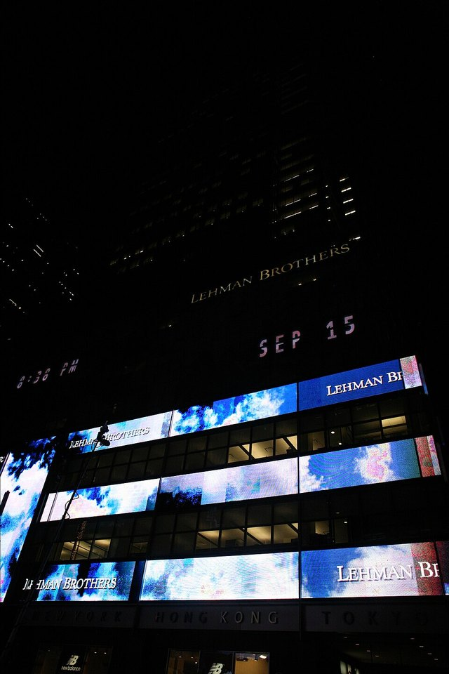

FILE FCP-14 HISTORICAL CASE FILE
Lehman Brothers’ Repo 105 balance-sheet reporting
ASSESSMENT: Window dressing is documented; the claim that it alone caused Lehman’s bankruptcy is not.
Documented findings, economic interpretation and unresolved claims are assessed separately.

Claim under review
The question is whether Lehman temporarily reduced reported quarter-end leverage through Repo 105 transactions without adequate disclosure.
Repo 105 transactions were concentrated near reporting dates and reversed afterward, making their presentation relevant to snapshot leverage. The Examiner described how Lehman obtained English-law opinions to support sale accounting; the issue was disclosure and substance, not that every repo is improper.
Context and timeline
Lehman used short-term repurchase agreements to finance securities. Repo 105 transactions were treated as sales under its accounting analysis, used to pay liabilities near reporting dates, then reversed. Lehman filed bankruptcy in September 2008.
Lehman’s dependence on short-term secured funding and doubts about real-estate assets predated its failure. Repo 105 could obscure reported leverage but did not create the underlying illiquid assets or establish that counterparties withdrew solely because of the quarter-end presentation.
Primary records and formal findings
Court-appointed examiner Valukas described legal opinions, accounting treatment and executive awareness, and concluded facts were inadequately disclosed. This was an examiner report, not an individual criminal conviction.
The examiner report is a detailed court-appointed investigation rather than an adjudicated finding of fraud. Recompute reported leverage and then test whether the adjustment explains any measurable change in lender behavior or investor decisions.
Independent economic evidence
Examiner schedules show quarter-end reduction in reported leverage; market evidence of funding stress and illiquid assets emerged independently.
Window dressing changed reported snapshots but sat within a broader funding and asset-quality crisis. The examiner’s evidence supports a disclosure concern; it does not isolate Repo 105 as the cause of bankruptcy.
Counter-evidence and limitations
Repo 105 was one contributor to opacity, not a sufficient cause of collapse. Public evidence does not prove it alone caused counterparties to withdraw funding.
Falsifiable checks and assessment
Recalculate leverage including temporary repos; compare disclosures with liquidity and counterparty haircuts and determine whether adjustment changed investor decisions.
Assessment: Window dressing is documented; the claim that it alone caused Lehman’s bankruptcy is not.
Sources and evidentiary notes
- Anton R. Valukas, Examiner’s Report in In re Lehman Brothers (2010)Court-appointed reconstruction of Repo 105 and disclosures. Its findings are limited to the parties, conduct, dates or mandate covered by that record.
- Lehman Forms 10-K and 10-Q (2007–08)Primary filings allow leverage comparisons but were management-prepared. It addresses this episode but cannot alone resolve the broader causal question.
- Financial Crisis Inquiry Commission, Final Report (2011)National inquiry situates Lehman in funding and regulatory failures. Its findings are limited to the parties, conduct, dates or mandate covered by that record.
Historical research only; not investment or legal advice.